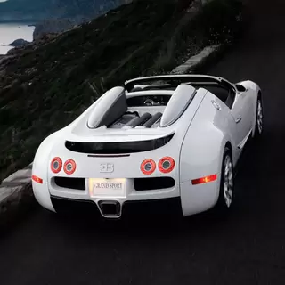

After the CHIRON and CHIRON Sport, the CHIRON Pur Sport showed the ferocious personality of a hyper sports car made for corners and lateral agility. Now, with the CHIRON Super Sport, we are following our long tradition of combining extreme high speed with absolute luxury, to offer a whole new dimension of the BUGATTI experience. With its longtail streamlined design and the fabulous performance of its 1.600 PS, the CHIRON Super Sport represents the essence of what we have learned and developed in recent years and honors the Super Sport brand nine decades after its birth. The CHIRON Super Sport is the ultimate Grand Tourisme, delivering brutal performance in total comfort. Ever since the first CHIRON entered the scene, it has been the embodiment of performance, power, and comfort. After the CHIRON and CHIRON Sport, the CHIRON Pur Sport showed the ferocious personality of a hyper sports car made for corners and lateral agility. Now, with the CHIRON Super Sport, we are following our long tradition of combining extreme high speed with absolute luxury, to offer a whole new dimension of the BUGATTI experience. With its longtail streamlined design and the fabulous performance of its 1.600 PS, the CHIRON Super Sport represents the essence of what we have learned and developed in recent years and honors the Super Sport brand nine decades after its birth. The CHIRON Super Sport is the ultimate Grand Tourisme, delivering brutal performance in total comfort. The CHIRON family is multi-faceted. Inspired by this versatility, we have created a double-sided navigation experience to present you BUGATTI’s latest masterpiece from all perspectives. We wish you a splendid journey. -2 Super Sport Heritage Redefining speed since 1931 The new CHIRON Super Sport joins a famous ancestral line of BUGATTI. A thoroughbred pedigree which –since its origins nine decades ago– combines brutal power and speed at their very best. With the new CHIRON Super Sport, BUGATTI is defining a new spectrum of speed and performance, enriching the legacy of the Super Sport heritage.
After the CHIRON and CHIRON Sport, the CHIRON Pur Sport showed the ferocious personality of a hyper sports car made for corners and lateral agility. Now, with the CHIRON Super Sport, we are following our long tradition of combining extreme high speed with absolute luxury, to offer a whole new dimension of the BUGATTI experience. With its longtail streamlined design and the fabulous performance of its 1.600 PS, the CHIRON Super Sport represents the essence of what we have learned and developed in recent years and honors the Super Sport brand nine decades after its birth. The CHIRON Super Sport is the ultimate Grand Tourisme, delivering brutal performance in total comfort. Ever since the first CHIRON entered the scene, it has been the embodiment of performance, power, and comfort. After the CHIRON and CHIRON Sport, the CHIRON Pur Sport showed the ferocious personality of a hyper sports car made for corners and lateral agility. Now, with the CHIRON Super Sport, we are following our long tradition of combining extreme high speed with absolute luxury, to offer a whole new dimension of the BUGATTI experience. With its longtail streamlined design and the fabulous performance of its 1.600 PS, the CHIRON Super Sport represents the essence of what we have learned and developed in recent years and honors the Super Sport brand nine decades after its birth. The CHIRON Super Sport is the ultimate Grand Tourisme, delivering brutal performance in total comfort. The CHIRON family is multi-faceted. Inspired by this versatility, we have created a double-sided navigation experience to present you BUGATTI’s latest masterpiece from all perspectives. We wish you a splendid journey. -2 Super Sport Heritage Redefining speed since 1931 The new CHIRON Super Sport joins a famous ancestral line of BUGATTI. A thoroughbred pedigree which –since its origins nine decades ago– combines brutal power and speed at their very best. With the new CHIRON Super Sport, BUGATTI is defining a new spectrum of speed and performance, enriching the legacy of the Super Sport heritage.
Ever since the first CHIRON entered the scene, it has been the embodiment of performance, power, and comfort. After the CHIRON and CHIRON Sport, the CHIRON Pur Sport showed the ferocious personality of a hyper sports car made for corners and lateral agility. Now, with the CHIRON Super Sport, we are following our long tradition of combining extreme high speed with absolute luxury, to offer a whole new dimension of the BUGATTI experience. ith its longtail streamlined design and the fabulous performance of its 1.600 PS, the CHIRON Super Sport represents the essence of what we have learned and developed in recent years and nors the Super Sport brand nine decades after its birth. The CHIRON Super Sport is the ultimate Grand Tourisme, delivering brutal performance in total comfort. The CHIRON family is multi-faceted. Inspired by this versatility, we have created a double-sided navigation experience to present you BUGATTI’s latest masterpiece from all perspectives.
Ever since the first CHIRON entered the scene, it has been the embodiment of performance, power, and comfort. After the CHIRON and CHIRON Sport, the CHIRON Pur Sport showed the ferocious personality of a hyper sports car made for corners and lateral agility. Now, with the CHIRON Super Sport, we are following our long tradition of combining extreme high speed with absolute luxury, to offer a whole new dimension of the BUGATTI experience. ith its longtail streamlined design and the fabulous performance of its 1.600 PS, the CHIRON Super Sport represents the essence of what we have learned and developed in recent years and nors the Super Sport brand nine decades after its birth. The CHIRON Super Sport is the ultimate Grand Tourisme, delivering brutal performance in total comfort. The CHIRON family is multi-faceted. Inspired by this versatility, we have created a double-sided navigation experience to present you BUGATTI’s latest masterpiece from all perspectives. We wish you a splendid journey. -2 Super Sport Heritage Redefining speed since 1931 The new CHIRON Super Sport joins a famous ancestral line of BUGATTI. A thoroughbred pedigree which –since its origins nine decades ago– combines brutal power and speed at their very best. With the new CHIRON Super Sport, BUGATTI is defining a new spectrum of speed and performance, enriching the legacy of the Super Sport heritage. Ever since the first CHIRON entered the scene, it has been the embodiment of performance, power, and comfort. After the CHIRON and CHIRON Sport, the CHIRON Pur Sport showed the ferocious personality of a hyper sports car made for corners and lateral agility. Now, with the CHIRON Super Sport, we are following our long tradition of combining extreme high speed with absolute luxury, to offer a whole new dimension of the BUGATTI experience. With its longtail streamlined design and the fabulous performance of its 1.600 PS, the CHIRON Super Sport represents the essence of what we have learned and developed in recent years and honors the Super Sport brand nine decades after its birth. The CHIRON Super Sport is the ultimate nd Tourisme, delivering brutal performance in total comfort. The CHIRON family is multi-faceted. Inspired by this versatility, we have created a double-sided navigation experience to present you BUGATTI’s latest masterpiece from all perspectives. We wish you a splendid journey. -2 Super ort Heritage Redefining speed since 1931 The new CHIRON Super Sport joins a famous ancestral line of BUGATTI. A thoroughbred pedigree which –since its origins nine decades ago– combines brutal power and speed at their very best. With the new CHIRON Super Sport, BUGATTI is defining a new spectrum of speed and performance, enriching the legacy of the Super Sport heritage.